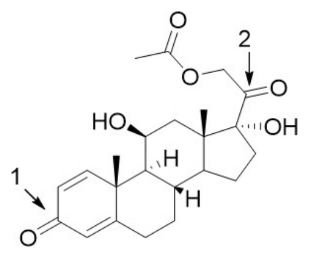
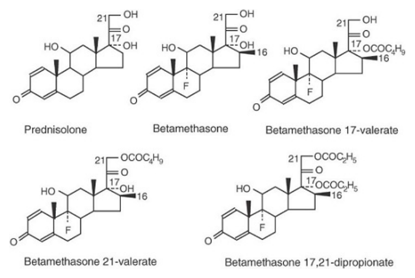
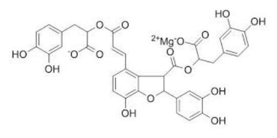
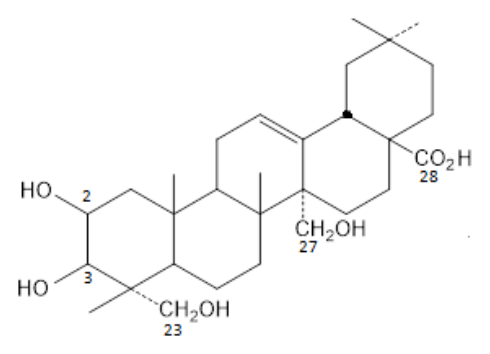
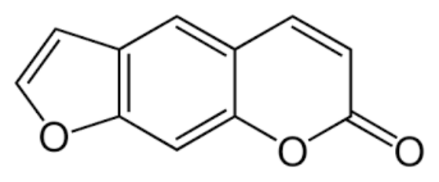

110 年第 1 次藥師藥物分析與生藥學試題與答案
這一頁是民國 110 年第 1 次藥師藥物分析與生藥學的整份歷屆試題，共 80 題，題目與標準答案出自考選部「國家考試試題及測驗式試題答案」開放資料，其中 68 題附有詳解。以下逐題列出題幹、選項與答案；要計時作答或記錄成績，請用線上練習。
考選部原始場次代碼：110020
線上作答這一科 →
全部 80 題
第 1 題
以非水滴定法進行neostigmine bromide含量分析時，可加入何種試劑來避免溴離子之干擾？
- （A）乙酸
- （B）乙酸汞
- （C）硝基苯
- （D）乙酐
答案：（B）
詳解與考點
正解：neostigmine bromide 的非水滴定中，bromide 會干擾滴定反應；（B）乙酸汞可與 bromide 結合形成穩定的汞鹵化物，將鹵離子遮蔽，讓後續過氯酸滴定反映鹼性藥物的當量，故選 B。
A：乙酸可作為非水滴定的介質，但不能藉由配位遮蔽 bromide，故無法解除題目所指的鹵離子干擾。
C：硝基苯不會與 bromide 形成用於此滴定的穩定錯合物；它在其他沉澱滴定情境可有用途，不能移作本題的遮蔽試劑。
D：乙酐可協助去除非水系統中的水分，但不會與 bromide 進行能消除干擾的錯合反應。
本題考點：非水滴定（nonaqueous titration）——測定弱鹼性鹽類時，先辨識反離子是否會參與滴定系統；鹵離子遮蔽（halide masking）——需以能和鹵離子穩定結合的試劑消除干擾，乾燥劑或溶劑不能替代此功能。
第 2 題
下列關於非水滴定法的敘述，何者錯誤？
- （A）當酸性化合物的pKa < 4時，可使用本法進行測定
- （B）可用於滴定弱酸性或弱鹼性的化合物
- （C）須使用可以溶解檢品的有機溶劑
- （D）常用過氯酸之乙酸溶液滴定弱鹼性化合物
答案：（A）
詳解與考點
正解：本題問非水滴定的錯誤敘述，判準是此法用來提升在水中解離不足的弱酸或弱鹼之反應完全性；（A）將酸性化合物 pKa < 4 列為典型適用條件方向相反，這類酸在水中相對容易解離，故選 A。
B：非水滴定可用於弱酸性或弱鹼性化合物，因合適的非水介質能改變酸鹼強度與端點清晰度，此敘述正確。
C：檢品必須能溶於所選有機溶劑，否則無法形成均一滴定系統並取得可靠終點，此敘述正確。
D：過氯酸的乙酸溶液是滴定弱鹼性化合物的常用滴定液，此敘述正確。
本題考點：非水酸鹼滴定（nonaqueous acid-base titration）——水中解離太弱、終點不清時才考慮以非水介質增強反應；溶劑選擇（solvent selection）——溶劑須同時能溶解檢品並提供可辨識的酸鹼終點。
第 3 題
下列酸鹼指示劑中，何者會隨溶液的pH值升高而由紅色變化為黃色？
- （A）phenolphthalein
- （B）thymol blue
- （C）methyl red
- （D）phenol red
答案：（C）
詳解與考點
正解：官方答案為 C；惟酸鹼指示劑的顏色必須連同變色區間判讀。methyl red 隨 pH 升高會由紅色轉為黃色，所以（C）確實符合；但（B）thymol blue 在第一個變色區間也由紅色轉為黃色，只在第二個區間由黃色轉為藍色。題幹未限定 pH 區間，選項並非唯一，依官方答案鍵故選 C。
A：phenolphthalein 在酸性至中性範圍多為無色，進入鹼性變色範圍才轉為粉紅色，並非由紅色轉為黃色。
B：thymol blue 的第一個變色區間確實可由紅色轉為黃色，因此在題幹未指定 pH 區間時，（B）不能嚴格排除；這正是本題與官方答案鍵不一致的具體爭點。
D：phenol red 隨 pH 升高的常見變化方向為黃色轉紅色，與題目所述的紅色轉黃色相反。
本題考點：酸鹼指示劑變色範圍（acid-base indicator transition range）——判斷顏色方向時必須同時指定 pH 區間；多重變色指示劑（multiple-transition indicator）——同一指示劑有兩個轉變區時，題幹未限定區間便可能產生不唯一答案。
第 4 題
在Volhard method中，以Fe(III)做為指示劑，再以NH4SCN進行反滴定。氯化物產生的氯化銀須以下列何物包 覆，以免溶解而造成誤差？
- （A）sodium carboxymethyl cellulose
- （B）nitrobenzene
- （C）acacia gum
- （D）Tween 80
答案：（B）
詳解與考點
正解：Volhard method 中，氯離子先形成 AgCl，再以 NH4SCN 反滴定過量的 Ag+；（B）硝基苯可包覆 AgCl 沉澱並隔開其與滴定液的接觸，避免反滴定時改變銀離子平衡而造成誤差，故選 B。
A：sodium carboxymethyl cellulose 不是此法用來包覆 AgCl 的標準試劑，無法取代硝基苯的疏水隔離作用。
C：acacia gum 可作為膠體性賦形劑，但不是 Volhard method 中防止 AgCl 干擾反滴定的指定包覆試劑。
D：Tween 80 是界面活性劑，不能提供本法所需的 AgCl 疏水包覆與隔離效果。
本題考點：Volhard 反滴定（Volhard back titration）——先分清被測鹵離子形成沉澱與過量銀離子的反滴定兩個步驟；沉澱隔離（precipitate isolation）——反滴定若會受既有沉澱影響，須用指定包覆物阻斷其與滴定液的反應。
第 5 題
費氏水分測定儀（Karl Fischer titrator）所使用的測量法屬於下列何者？
- （A）argentimetric titration
- （B）compleximetric titration
- （C）amperometric titration
- （D）iodometric titration
答案：（C）
詳解與考點
正解：Karl Fischer titrator 以碘與水的氧化還原反應為基礎，終點以電極偵測碘的電流變化；（C）amperometric titration 因而符合其測量方式，故選 C。
A：argentimetric titration 是以銀離子與鹵離子等反應為核心的沉澱滴定，並非 Karl Fischer 測水的終點偵測原理。
B：compleximetric titration 依賴金屬離子與配位劑形成錯合物，適用於金屬離子分析，與水和碘的反應無關。
D：iodometric titration 雖也涉及碘的氧化還原化學，但通常指以釋出碘後再以還原劑滴定的程序；Karl Fischer 的分類重點是以電流偵測終點，不能只因使用碘就歸入 iodometric titration。
本題考點：Karl Fischer 水分測定（Karl Fischer titration）——看到試劑中碘與水的專一反應時，連結到水分定量；安培終點偵測（amperometric endpoint detection）——終點由電極電流變化判定時，分類看偵測方法而非僅看參與反應的試劑。
第 6 題
在25℃時，下列何種半反應的還原電位（Eo）最低？
- （A）Zn2+ + 2e- → Zn
- （B）Fe3+ + e-→ Fe2+
- （C）MnO4- + 8H+ + 5e- → Mn2+ + 4H2O
- （D）I2 + 2e- → 2I-
答案：（A）
詳解與考點
正解：標準還原電位越低，表示該物種越不容易被還原、反而較傾向失去電子；（A）Zn2+ + 2e- → Zn 的標準還原電位最負，因此在四個半反應中最低，故選 A。
B：Fe3+ + e- → Fe2+ 的還原電位為正值，Fe3+ 具有可觀的氧化能力，不會是本題最低者。
C：MnO4- 在酸性條件還原為 Mn2+ 的電位很高，是強氧化劑的典型半反應，與最低電位相反。
D：I2 + 2e- → 2I- 的還原電位高於 zinc couple，不能因碘本身呈現元素態就判為最難還原。
本題考點：標準還原電位（standard reduction potential）——比較半反應時，數值愈負代表還原傾向愈低、金屬態愈容易被氧化；氧化還原劑強度（redox-agent strength）——高還原電位對應較強氧化劑，低還原電位則常對應較強還原劑的還原態。
第 7 題
關於乙醇測定法的敘述，下列何者錯誤？
- （A）對含醇量超過30%的液體，是測定其折射率
- （B）對含醇量少於30%的液體，是測定其比重
- （C）主要有蒸餾法和氣相層析法二種方法
- （D）測量時應注意防止乙醇因蒸發而損失
答案：（A）
第 8 題
下列各檢查法與其錯合試劑之配對組合中，何者錯誤？
- （A）砷檢查法：二乙胺二硫甲酸銀
- （B）鉛檢查法：二苯硫腙
- （C）硒檢查法：二胺萘
- （D）汞檢查法：硫氰酸銨
答案：（D）
詳解與考點
正解：各元素檢查法的錯合試劑要依其形成有色或可測複合物的專一配對判斷；（D）硫氰酸銨不是汞檢查法的正確錯合試劑，因此為錯誤配對，故選 D。
A：砷檢查法可利用二乙胺二硫甲酸銀與砷化氫反應形成可測訊號，此配對正確。
B：鉛檢查法以二苯硫腙形成有色錯合物作為判定基礎，此配對正確。
C：硒檢查法可用二胺萘形成螢光性衍生物進行檢測，此配對正確。
本題考點：元素限量檢查（elemental limit test）——看到元素檢查法時，按目標離子與特定顯色或螢光試劑配對，不以試劑名稱的含硫或含氮特徵猜測；錯合反應（complexation reaction）——判讀配對題要確認試劑是否能對該元素形成具有可量測訊號的產物。
第 9 題
下列何項成分不易出現於總灰分中？
- （A）magnesium oxide
- （B）calcium sulfate
- （C）ammonium nitrate
- （D）aluminum phosphate
答案：（C）
詳解與考點
正解：總灰分是樣品灼燒後留下的耐熱、非揮發性無機殘渣；（C）ammonium nitrate 受熱會分解為揮發性產物，不易留在灰分中，故選 C。
A：magnesium oxide 是耐熱無機氧化物，灼燒後可作為無機殘渣存在於總灰分中。
B：calcium sulfate 為無機鹽類，在總灰分的灼燒條件下可留為殘渣，並非最不易出現的成分。
D：aluminum phosphate 為不易揮發的無機磷酸鹽，可能成為灼燒後的總灰分成分。
本題考點：總灰分（total ash）——判斷成分是否會留在灰分時，先看灼燒後是否為耐熱且非揮發的無機物；熱分解（thermal decomposition）——會分解成氣體或揮發性產物的鹽類，不應當作灰分殘留物。
第 10 題
下列何者是皂化價的定義？
- （A）皂化0.1 g油脂或蠟所需之氫氧化鉀克數
- （B）皂化1.0 g油脂或蠟所需之氫氧化鉀克數
- （C）皂化0.1 g油脂或蠟所需之氫氧化鉀毫克數
- （D）皂化1.0 g油脂或蠟所需之氫氧化鉀毫克數
答案：（D）
詳解與考點
正解：皂化價以每單位重量油脂完全皂化所消耗的鹼量表示；（D）其定義為皂化 1.0 g 油脂或蠟所需氫氧化鉀的毫克數，故選 D。
A：皂化 0.1 g 的樣品且以氫氧化鉀克數表示，同時改變了定義中的樣品重量與鹼量單位。
B：皂化 1.0 g 的樣品重量正確，但氫氧化鉀必須以毫克數表示，不是克數。
C：氫氧化鉀以毫克數表示正確，但樣品重量誤作 0.1 g，不能代表皂化價的標準定義。
本題考點：皂化價（saponification value）——定義題要同時核對樣品基準重量與氫氧化鉀單位，兩者缺一不可；油脂品質指標（fat and oil quality index）——皂化價以每克油脂消耗的鹼量表示，可用來比較脂肪酸平均鏈長與酯化組成。
第 11 題
關於refractive index detector用於液相層析之敘述，下列何者錯誤？
- （A）係利用光通過檢品時產生角度偏折現象
- （B）須同時檢測固定相之背景值
- （C）為各類化合物之通用檢測器
- （D）溫度會影響其偵測效果
答案：（B）
詳解與考點
正解：refractive index detector 比較的是含分析物流出液與參考流動相的折射率；（B）將背景值寫成固定相是不正確的，固定相留在管柱內，並非偵測池中須同步檢測的參考背景，故選 B。
A：光線通過折射率不同的檢品會發生偏折，refractive index detector 即利用此光學差異產生訊號，此敘述正確。
C：refractive index detector 不要求分析物具有特定發色團，對多類化合物都可使用，故屬通用型檢測器，此敘述正確。
D：折射率受溫度影響，溫度波動會改變基線與偵測靈敏度，因此此敘述正確。
本題考點：折射率檢測器（refractive index detector）——比較檢品流與參考流動相的折射率差，而不是偵測固定相；液相層析通用檢測（universal detection in HPLC）——缺乏發色團的化合物可考慮 RI 偵測，但必須嚴格控溫。
第 12 題
在prednisolone acetate（如下圖）之紅外光光譜中，下列何者最可能為1、2號羰基（carbonyl group）之吸收峰 位置？

- （A）1610 cm-1；1780 cm-1
- （B）1710 cm-1；1660 cm-1
- （C）1660 cm-1；1710 cm-1
- （D）1780 cm-1；1610 cm-1
答案：（C）
第 13 題
利用 MeOH-d4 作為溶劑所測得之13C-核磁共振譜中，其溶劑呈現之訊號為何？
- （A）triplet
- （B）quartet
- （C）quintet
- （D）septet
答案：（D）
詳解與考點
正解：MeOH-d4 的甲基碳為 CD3；在 13C NMR 中，此碳與 3 個等效 deuterium 偶合，而 deuterium 的核自旋 I = 1。以 2nI + 1 計算，n = 3，故 2 × 3 × 1 + 1 = 7；（D）septet 為 7 條峰，故選 D。
A：triplet 只有 3 條峰，與 13C 同時受 3 個 spin-1 deuterium 偶合所得的 7 條峰不符。
B：quartet 常見於碳與 3 個 spin-1/2 氫核偶合的 n + 1 規則；本題耦合核為 spin-1 的 deuterium，不能沿用該規則。
C：quintet 代表 5 條峰，與 CD3 的 2nI + 1 計算結果不符。
本題考點：異核偶合多重峰（heteronuclear coupling multiplicity）——先辨識耦合核的自旋量子數，再用 2nI + 1 判定峰數；氘代溶劑訊號（deuterated-solvent signal）——13C NMR 中 CD3 的氘偶合未按氫核規則處理，3 個 deuterium 會給 septet。
第 14 題
下列有關核磁共振譜的敘述，何者正確？
- （A）解析度不受磁場均勻度影響
- （B）偶合常數（Ｊ）會隨外加磁場增強而變大
- （C）一般13C-核磁共振譜化學位移之測定範圍為-10～250 ppm
- （D）氫核磁共振譜之化學位移可利用氘代溶劑上的氘訊號作為內標準
答案：（C）
詳解與考點
正解：13C NMR 的化學位移涵蓋範圍比 1H NMR 廣；（C）一般可用約 -10 至 250 ppm 表示其測定範圍，符合常見碳化學環境的分布，故選 C。
A：磁場均勻度會直接影響譜峰線寬與解析度；均勻度不足時相近訊號更難分開，因此此敘述錯誤。
B：偶合常數 J 以 Hz 表示時基本上不隨外加磁場強度改變；隨磁場改變的是同一 ppm 差所對應的 Hz 間隔，不是 J 本身。
D：氘代溶劑主要供核磁共振儀鎖場使用，氘核訊號不是 1H NMR 的內標準；化學位移應以適當參考標準判定。
本題考點：13C 化學位移範圍（13C chemical-shift range）——遇到核種比較時，先判斷 13C 的 ppm 分布遠較 1H 寬廣；偶合常數（coupling constant, J）——以 Hz 表示的 J 與磁場強度無關，不能和 ppm 間隔混為一談；磁場均勻度（magnetic-field homogeneity）——解析度下降時先考慮磁場均勻度與 shimming。
第 15 題
在13C-核磁共振譜中，procaine之酯基碳的化學位移約為多少（ppm）？
- （A）170
- （B）150
- （C）185
- （D）205
答案：（A）
詳解與考點
正解：procaine 的酯基羰基碳屬於羧酸酯碳，13C NMR 中通常落在約 170 ppm 的下場區；（A）170 ppm 因而符合該酯基碳的化學位移，故選 A。
B：150 ppm 較常對應芳香環中受雜原子取代的碳等環境，並非 procaine 酯基羰基碳的典型位置。
C：185 ppm 比一般羧酸酯羰基更下場，較接近其他羰基環境，不能作為本題酯基碳的近似值。
D：205 ppm 是更下場的羰基區，常用於辨識醛或酮類碳，與羧酸酯碳不同。
本題考點：酯基羰基碳化學位移（ester carbonyl carbon chemical shift）——辨識 13C NMR 的酯基時，優先在約 170 ppm 的羧酸衍生物區找訊號；羰基區判讀（carbonyl-region interpretation）——比較羰基時，羧酸酯通常比醛酮出現在較上場的位置。
第 16 題
2D-NOESY（Nuclear Overhauser Effect Spectroscopy）圖譜可提供下列何種資訊？
- （A）化合物相對立體結構
- （B）碳與氫的偶合常數
- （C）碳與氫經單鍵鍵結之關聯
- （D）碳與氫經多鍵鍵結之關聯
答案：（A）
詳解與考點
正解：2D-NOESY 的交叉峰反映核磁共振活性核彼此的空間接近，而非化學鍵的連接順序；由核間距離與交叉峰關係可判定（A）化合物的相對立體結構，例如同面或異面關係，故選 A。
B：碳與氫的偶合常數屬 J coupling 資訊，需由分裂型態或適合的耦合實驗判讀；2D-NOESY 不以測量偶合常數為目的。
C：碳與氫經單鍵鍵結的關聯由 HSQC 或 HMQC 的一鍵異核相關提供；2D-NOESY 顯示的是 through-space correlation，不能把空間接近當成單鍵連結。
D：碳與氫經多鍵鍵結的關聯通常以 HMBC 判讀；其交叉峰源於多鍵 J coupling，和 2D-NOESY 的空間效應不同。
本題考點：核歐弗豪斯效應（Nuclear Overhauser Effect，NOE）——看到交叉峰要先判斷是否是空間接近訊號，用於建立相對立體化學；異核單鍵相關（HSQC/HMQC）——題目問 C-H 一鍵連結時選這類 through-bond 實驗；異核多鍵相關（HMBC）——題目要跨二至數鍵連結時依長程 J coupling 判讀。
第 17 題
有關旋光度測定之敘述，下列何者錯誤？
- （A）在相同條件下，光學活性化合物的比旋光度為常數
- （B）旋光度會受測定光源波長所影響
- （C）所用旋光計之精確度至少應達 0.02°
- （D）可用來測定異丙醇水溶液中異丙醇的含量
答案：（D）
詳解與考點
正解：旋光度只能量測具有光學活性的物質；異丙醇分子沒有手性中心，水溶液中的異丙醇不會產生可供定量的旋光訊號，所以（D）錯誤，故選 D。
A：比旋光度是在指定波長、溫度、溶媒與濃度等條件下的特徵值；題幹已限定相同條件，所以此敘述正確，非答案。
B：旋光度會隨入射光波長改變，這是旋光色散的表現；比較旋光度時必須控制光源波長，故此敘述正確。
C：旋光度測定需要能辨別小角度差異的儀器；題述 0.02° 為適用旋光計的精確度要求，故此敘述正確。
本題考點：旋光度（optical rotation）——先判斷待測物是否具手性，無光學活性的物質不能靠旋光度直接定量；比旋光度（specific rotation）——只有在波長、溫度、溶媒與濃度等條件一致時才可作為物質特徵值；旋光色散（optical rotatory dispersion）——光源波長改變時旋光度會變，方法條件不可省略。
第 18 題
下列何者常應用於藥物分配係數、溶解度及藥物溶離的測定？
- （A）紅外光光譜法
- （B）質譜法
- （C）拉曼光譜法
- （D）紫外光／可見光光譜法
答案：（D）
詳解與考點
正解：藥物分配係數、溶解度與溶離試驗都要追蹤溶液中的藥物濃度；（D）UV-Vis 光譜法可依吸光度與濃度關係連續定量，因此是這三類測定的常用方法，故選 D。
A：紅外光光譜法主要用於官能基辨識與結構鑑定；雖可在特定條件下做定量，但不是分配係數、溶解度與溶離試驗最常用的濃度追蹤方法。
B：質譜法擅長分子量與結構資訊的取得；其儀器與前處理較複雜，通常不作為這三項常規試驗的首選濃度測定法。
C：拉曼光譜法適合分子振動、固態型態與身分鑑別；它可發展定量方法，但在題列溶液性試驗中不如 UV-Vis 光譜法普遍。
本題考點：紫外可見光定量（UV-Vis spectrophotometry）——待測物有合適吸收且濃度位於線性範圍時，可由吸光度換算濃度；溶離試驗（dissolution testing）——需要在各時間點重複測得溶液濃度，優先選快速、可連續操作的定量法；分配係數（partition coefficient）——兩相達平衡後，以各相濃度比判定藥物的分配傾向。
第 19 題
有關微分光譜（derivative spectra）的敘述，下列何者錯誤？
- （A）可應用於解析層析峰（peaks of chromatogram）的純度
- （B）一次微分曲線的最大值對應於原光譜的最高點
- （C）一次微分曲線的零點對應於原光譜的最高點
- （D）二次微分曲線的最小值對應於原光譜的最高點
答案：（B）
詳解與考點
正解：原光譜在吸收極大值 λmax 的切線斜率為零，因此一次微分曲線會在 λmax 通過零點；（B）將一次微分曲線的最大值說成對應原光譜最高點，混淆了斜率最大與吸收最大，故選 B。
A：微分光譜可放大譜帶形狀的差異，並協助比較重疊訊號下的層析峰純度；所以此敘述可成立，非答案。
C：原光譜達吸收極大值時斜率變號，故一次微分曲線的零點對應 λmax；此敘述正確。
D：對通常向上的吸收峰，λmax 附近的曲率為負，二次微分常呈負向谷值；因此二次微分曲線的最小值可對應原光譜最高點。
本題考點：微分光譜（derivative spectroscopy）——題目問原光譜峰頂時，先用一階導數為零的判準；一次微分光譜（first-derivative spectrum）——最大或最小值對應原譜最陡的斜率位置，不是吸收峰頂；二次微分光譜（second-derivative spectrum）——可用曲率的谷值或峰值輔助定位與分辨重疊譜帶。
第 20 題
關於拉曼光譜分析應用的敘述，下列何者錯誤？
- （A）常用於建立藥物的指紋區
- （B）可直接檢測製劑中的有效成分
- （C）常用於定量分析
- （D）可鑑定原料藥晶形
答案：（C）
詳解與考點
正解：拉曼光譜的主要優勢在分子振動指紋、製劑內成分辨認與晶型差異；（C）把它概括為常用的定量分析法並不恰當。拉曼法可在建立校正模型與完成方法驗證後做定量，但一般應用仍以身分確認與固態特性鑑定為主，故選 C。
A：拉曼位移反映分子振動特徵，可形成具辨識力的指紋區；所以（A）作為建立藥物身分鑑別依據的敘述正確。
B：拉曼訊號可直接量測製劑中的有效成分，且水的拉曼干擾相對有限；因此（B）可成立，分辨關鍵在直接檢測不等於不需方法驗證。
D：不同晶型的晶格與分子排列會改變拉曼振動峰形或峰位；故（D）可用於原料藥晶型鑑定。
本題考點：拉曼光譜（Raman spectroscopy）——要辨認藥物身分或比較晶型時，先比對特徵拉曼位移與峰形；藥物指紋（spectral fingerprint）——多個特徵峰的組合比單一峰更適合做鑑別；拉曼定量（Raman quantitation）——只有建立校正模型並控制基質與取樣變異後，才可將拉曼強度用於定量。
第 21 題
關於原子放射光譜分析之敘述，下列何者較不適當？
- （A）可檢測albumin溶液中的鈉含量
- （B）可檢測透析溶液中的鉀含量
- （C）可檢測白喉疫苗中的鈣含量
- （D）可檢測血液檢品中的鋰濃度
本題送分，無標準答案
第 22 題
分子內能（internal energy）中電子遷移、振動遷移與轉動遷移之相對能量比約為：
- （A）1：10：100
- （B）10：5：1
- （C）10：1：0.1
- （D）100：1：0.01
答案：（D）
詳解與考點
正解：電子遷移所需能量遠高於振動遷移，而振動遷移又遠高於轉動遷移；常用的相對量級為 100:1:0.01，所以（D）符合電子、振動、轉動依序遞減的關係，故選 D。
A：1:10:100 將能量大小完全倒置，把轉動遷移誤當成最高能量遷移；實際上轉動能階間距最小。
B：10:5:1 雖保留遞減方向，但電子與振動、振動與轉動的能量差都被縮得過小，無法反映三類遷移的典型量級差。
C：10:1:0.1 將兩個相鄰能量層級都只設為約十倍差；電子與轉動遷移的總差距因而明顯不足。
本題考點：電子遷移（electronic transition）——題目涉及紫外可見光區時，先辨識其能量最高；振動遷移（vibrational transition）——看到紅外光譜時以中等能量的振動能階變化判讀；轉動遷移（rotational transition）——微波區常對應最小能階間距，不能與電子遷移混為同級。
第 23 題
含一個氯原子之化合物，其EIMS圖譜中之分子離子峰[M]+與[M+2]+之訊號強度比為何？
- （A）1：1
- （B）2：1
- （C）3：1
- （D）24：1
答案：（C）
詳解與考點
正解：含一個氯原子的分子離子峰中，M 主要含 ³⁵Cl，M+2 主要含 ³⁷Cl；兩種氯同位素的天然豐度使訊號約呈 3:1，因此（C）正確，故選 C。
A：1:1 是溴同位素峰型的典型辨識比；不能套用到只含一個氯原子的化合物。
B：2:1 不是單一氯原子所產生的典型 M/M+2 同位素比，無法反映 ³⁵Cl 與 ³⁷Cl 的相對豐度。
D：24:1 表示 M+2 訊號只占很小部分；氯的 M+2 峰約為 M 峰的三分之一，與此比值不符。
本題考點：氯同位素峰型（chlorine isotope pattern）——在 EI-MS 中看到相隔 2 u 的 M 與 M+2 峰時，以約 3:1 判斷單一氯原子；溴同位素峰型（bromine isotope pattern）——若兩峰近似 1:1，優先判為含溴而非含氯；質譜同位素訊號（isotopic ion peaks）——先以峰距判同位素，再以強度比判元素種類。
第 24 題
有關質譜分析的敘述，下列何者正確？
- （A）化學游離法（CI）適用於蛋白質的分子量測定
- （B）測定蛋白質的分子量時，可用電子撞擊離子法（EI）
- （C）常壓下的離子化技術尚未被開發
- （D）質譜圖通常以m/z為橫軸，各離子的相對強度為縱軸
答案：（D）
詳解與考點
正解：質譜依離子的質荷比排序，橫軸為 m/z，縱軸為各離子的相對強度；（D）正確描述質譜圖的基本座標意義，故選 D。
A：化學游離法（CI）雖較電子撞擊溫和，仍通常適用可氣化的小分子；完整蛋白質分子量測定較適合 ESI 或 MALDI，故此敘述錯誤。
B：電子撞擊離子法（EI）需要樣品可揮發且承受高能量游離，蛋白質易碎裂且不易氣化；所以（B）不適合用於完整蛋白質的分子量測定。
C：常壓離子化技術已經被開發，例如 ESI 與 APCI；因此（C）說尚未開發與實際技術相反。
本題考點：質荷比（mass-to-charge ratio，m/z）——讀質譜圖時先以橫軸定位離子質荷比，再用縱軸比較相對豐度；軟游離（soft ionization）——測完整大分子時選 ESI 或 MALDI 以減少碎裂；電子撞擊游離（electron ionization，EI）——適合可揮發、熱安定的小分子，不宜直接套用到蛋白質。
第 25 題
有關螢光光譜測定法之敘述，下列何者錯誤？
- （A）激發波長及發射波長皆可經掃描選擇最佳值，以提高靈敏度及專一性
- （B）核黃素須加入低亞硫酸鈉（sodium hydrosulfite）還原，才具有螢光
- （C）一般激發光源與偵測器呈90度
- （D）樣品貯液槽四面透明
答案：（B）
詳解與考點
正解：核黃素本身具有螢光；以低亞硫酸鈉還原後會形成還原態而使螢光減弱或消失，所以（B）說必須先還原才具有螢光，方向相反，故選 B。
A：螢光測定可分別掃描激發與發射波長，選擇較佳組合以降低干擾並提高靈敏度；此敘述正確。
C：激發光源與偵測器通常成 90°，可減少透射光與散射光直接進入偵測器；故此敘述正確。
D：螢光樣品池需要讓激發光進入並讓側向發射光通過；（D）四面透明的設計符合這個光路需求。
本題考點：螢光測定（fluorimetry）——先確認分析物是否在原態具有可量測螢光，還原或氧化可能改變訊號；激發與發射波長（excitation/emission wavelengths）——掃描後選兼顧強度與干擾最低的波長組合；90° 偵測幾何（right-angle detection）——用側向偵測降低激發光漏入造成的背景。
第 26 題
利用HPLC定量飲料中之維生素B2（riboflavin）含量時，下列何種偵測器有最好的選擇性？
- （A）UV detector
- （B）fluorescence detector
- （C）evaporative light-scattering detector
- （D）refractive index detector
答案：（B）
詳解與考點
正解：核黃素具有天然螢光，HPLC 分離後可在特定激發與發射條件下量測其螢光；（B）fluorescence detector 因同時利用保留時間與螢光性質，對飲料中核黃素的選擇性最佳，故選 B。
A：UV detector 只量測紫外吸收，飲料中其他具吸收的成分也可能產生訊號；因此（A）的選擇性低於螢光偵測。
C：evaporative light-scattering detector 主要偵測揮發性移動相蒸發後的非揮發性粒子，沒有利用核黃素的特異螢光；故（C）不具最佳選擇性。
D：refractive index detector 對多種溶質皆可能響應，容易受溫度與組成影響；（D）屬較通用的偵測器，不能特異辨識核黃素。
本題考點：螢光偵測器（fluorescence detector）——分析物本身或衍生物具螢光時，優先利用選定的激發與發射波長提升選擇性；HPLC 偵測器選擇（HPLC detector selection）——在分離之外再選具分析物特徵的偵測原理，可降低基質干擾；核黃素（riboflavin）——其天然螢光是選擇偵測方法的重要結構線索。
第 27 題
下列何者不適合充當matrix-assisted laser desorption ionization（MALDI）法之介質？
- （A）2,5-dihydroxy benzoic acid
- （B）nicotinic acid
- （C）butyric acid
- （D）ferulic acid
答案：（C）
詳解與考點
正解：MALDI 的介質必須能吸收雷射能量、與分析物共同結晶並促進脫附游離；（C）butyric acid 為小型脂肪族酸，缺乏適合作為 MALDI 介質的有效發色團與能量傳遞特性，故選 C。
A：2,5-dihydroxybenzoic acid 具芳香共軛系統與酸性官能基，是常用的 MALDI matrix；因此（A）適合。
B：nicotinic acid 可提供吸收能量與質子轉移的條件，能作為 MALDI matrix 候選物；故（B）不是不適合者。
D：ferulic acid 具有共軛芳香結構與酸性官能基，可符合 MALDI 介質的基本條件；所以（D）可作為候選介質。
本題考點：基質輔助雷射脫附游離（matrix-assisted laser desorption ionization，MALDI）——先看介質能否吸收雷射並協助分析物脫附游離；MALDI matrix——適合介質通常有可吸收雷射的芳香共軛結構與可參與質子轉移的官能基；軟游離（soft ionization）——分析大分子時選能降低碎裂的游離方式以保留分子量資訊。
第 28 題
關於高效液相層析法之應用，下列何者正確？
- （A）使用粒徑篩析（size-exclusion）層析法時，苯丙胺酸的滯留時間比膠原蛋白短
- （B）相較於苯甲酸，苯甲醛更不易滯留在矽膠管柱上
- （C）氧化鋁通常用作離子交換充填劑的基礎材料
- （D）使用逆相管柱分離時，benzene比amylbenzene的滯留時間更長
答案：（B）
詳解與考點
正解：在矽膠固定相的正常相層析中，較極性且可強烈氫鍵作用的物質滯留較久；相較於苯甲酸，（B）苯甲醛極性與作用力較小，因此較不易滯留在矽膠管柱上，故選 B。
A：粒徑篩析以分子大小決定洗脫順序；膠原蛋白分子大、較難進入孔隙而先流出，苯丙胺酸分子小、進入孔隙較多而滯留較久，所以（A）將順序說反。
C：氧化鋁常作為吸附層析的固定相；離子交換填料需要固定帶電官能基，故（C）不宜把氧化鋁視為其通常的基礎材料。
D：逆相管柱的固定相較非極性，amylbenzene 比 benzene 更疏水而滯留較久；所以（D）說 benzene 滯留時間更長是錯的。
本題考點：正常相層析（normal-phase chromatography）——固定相極性較高時，先以分析物與固定相的極性作用判斷滯留；粒徑篩析（size-exclusion chromatography）——分子越大越先洗脫，不能把滯留順序按分子量直覺反推；逆相層析（reversed-phase chromatography）——比較疏水性時，較非極性的分析物通常在非極性固定相保留較久。
第 29 題
Cs為液相層析中分子在固定相中質量轉移的阻力，若固定相厚度增加為2倍，則Cs變為幾倍？
- （A）2
- （B）4
- （C）0.5
- （D）0.25
答案：（B）
詳解與考點
正解：液相層析的固定相質量轉移阻力 C_s 與固定相厚度 d_f 的平方成正比，即 C_s ∝ d_f^2。固定相厚度增為 2 倍時，C_s（新）/C_s（原） = (2d_f)^2/d_f^2 = 4，因此（B）正確，故選 B。
A：2 倍是把 C_s 誤當成只與固定相厚度成線性關係；質量轉移路徑變長時，阻力依厚度平方增加。
C：0.5 倍把關係錯當成與固定相厚度成反比；厚度增加不會使固定相內擴散阻力下降。
D：0.25 倍同時把方向與平方關係都顛倒；平方關係應使阻力增加為 4 倍，而非降為四分之一。
本題考點：范第姆特方程式（van Deemter equation）——比較流速與柱效時，把 C 項視為質量轉移受限的貢獻；固定相質量轉移阻力（stationary-phase mass-transfer resistance）——固定相膜越厚，溶質往返平衡距離越長，C_s 依厚度平方增加；層析柱效率（column efficiency）——要降低高流速下展峰，可優先減少質量轉移阻力。
第 30 題
關於固相萃取的操作程序，下列何者正確？①conditioning ②washing ③eluting ④sample loading
- （A）②①④③
- （B）④①②③
- （C）①④②③
- （D）④③②①
答案：（C）
詳解與考點
正解：固相萃取必須先以 conditioning 潤濕並活化吸附材，再進行 sample loading、washing，最後以 eluting 收集目標分析物；正確順序為 ①④②③，即（C），故選 C。
A：②①④③ 一開始先 washing，但吸附材尚未 conditioning，也還沒有樣品可洗去干擾物；故（A）程序顛倒。
B：④①②③ 將 sample loading 放在 conditioning 之前，吸附材尚未建立合適的潤濕與保留條件，可能使分析物流失。
D：④③②① 先 eluting 再 washing，會在去除干擾物之前就釋放目標分析物，且最後才 conditioning，無法形成有效萃取流程。
本題考點：固相萃取（solid-phase extraction，SPE）——操作順序固定為 conditioning、loading、washing、eluting，先建立保留再選擇性洗脫；吸附材活化（conditioning）——在上樣前以適當溶劑潤濕固定相，避免保留行為不穩定；洗滌與洗脫（washing/eluting）——洗滌去除干擾物，洗脫才回收目標物，兩步不能對調。
第 31 題
A、B混合物以HPLC進行分析，移動相流速為1.2 mL/min，已知A之滯留因子（capacity factor，k'A）為12.0， 滯留時間13.0 min。若B之滯留因子（k'B）為15.0時，則其滯留時間約為多少min？
- （A）16
- （B）13
- （C）19
- （D）12
答案：（A）
詳解與考點
正解：同一根 HPLC 管柱與流速下，死時間 t_M 不變，滯留因子用 k' = (t_R - t_M)/t_M 計算。先由 A 求得 t_M = 13.0 min/(1 + 12.0) = 1.0 min；再代入 B，t_R（B） = 1.0 min × (1 + 15.0) = 16.0 min，所以（A）16 min 正確，故選 A。
B：13 min 是已知 A 的滯留時間；以 t_M = 1.0 min 代入（B）13 min，k'_B = (13.0 - 1.0)/1.0 = 12.0，不符合題給的 15.0。
C：以（C）19 min 反算，k'_B = (19.0 - 1.0)/1.0 = 18.0；此值大於題給的 15.0，故不成立。
D：以（D）12 min 反算，k'_B = (12.0 - 1.0)/1.0 = 11.0；此值小於題給的 15.0，故不成立。
本題考點：滯留因子（retention factor，k'）——同一系統中以 k' = (t_R - t_M)/t_M 連結分析物滯留時間與死時間；死時間（dead time，t_M）——在固定管柱、移動相與流速下為共同基準，可先由已知分析物反推；滯留時間（retention time，t_R）——k' 增加時，在 t_M 不變下 t_R 必定增加。
第 32 題
採用C18管柱分析betamethasone 時，下列移動相何者可使分析物的滯留時間最短？
- （A）methanol-water（30：70）
- （B）methanol-water（20：80）
- （C）acetonitrile-water（30：70）
- （D）acetonitrile-water（70：30）
答案：（D）
詳解與考點
正解：C18 為逆相固定相，移動相中的有機溶劑比例越高，通常洗脫力越強；（D）acetonitrile-water（70:30）具有最高有機相比例，且 acetonitrile 的逆相洗脫力通常較 methanol 強，因此滯留時間最短，故選 D。
A：（A）methanol-water（30:70）的有機相只有 30%，水相比例較高，洗脫力弱於（D），分析物保留時間較長。
B：（B）methanol-water（20:80）的有機相比例更低，對 C18 的洗脫力又低於（A），不可能是最短滯留時間。
C：（C）acetonitrile-water（30:70）雖使用較強的 acetonitrile，但有機相仍只有 30%；分辨關鍵在有機相比例，不能勝過（D）的 70%。
本題考點：逆相層析（reversed-phase chromatography）——在 C18 管柱上，分析物越疏水通常滯留越久；移動相洗脫力（elution strength）——比較同類條件時，先看有機溶劑比例，比例提高通常縮短滯留；acetonitrile 與 methanol——在相同比例的逆相條件下，acetonitrile 常提供較強洗脫力，但仍須與比例一起判斷。
第 33 題
下圖5個皮質類固醇化合物利用C18層析管，以甲醇／水（75：25）為移動相沖提，則下列何者的滯留時間排 第3位？

- （A）betamethasone
- （B）betamethasone 21-valerate
- （C）betamethasone 17-valerate
- （D）betamethasone 17,21-dipropionate
答案：（C）
第 34 題
以液相層析法分析含化合物A與B之混合檢品，若其滯留因子（k'）分別為k'A = 3、k'B = 5，下列敘述何者正 確？
- （A）化合物A的滯留時間較長
- （B）化合物B的滯留體積較大
- （C）化合物B之含量較多
- （D）化合物B之分子量較大
答案：（B）
詳解與考點
正解：在同一液相層析系統中，滯留因子越大，滯留時間與滯留體積都越大。k'_B = 5 大於 k'_A = 3，因此（B）化合物 B 的滯留體積較大，故選 B。
A：k'_A 較小，依 t_R = t_M(1 + k') 可知 A 的滯留時間較短；（A）將兩者的時間順序說反。
C：滯留因子描述分析物在固定相與移動相間的分配，不直接代表樣品量；所以（C）不能由 k' 較大推論 B 含量較多。
D：分子量不是決定滯留因子的單一變數，固定相作用力、疏水性與流動相組成也會影響；故（D）不能由 B 的 k' 較大推論其分子量較大。
本題考點：滯留因子（retention factor，k'）——在同一層析條件下，k' 越大表示分析物相對保留越久；滯留體積（retention volume）——流速固定時，滯留時間較長就對應較大的滯留體積；分離與定量（separation versus quantitation）——k' 用來比較保留行為，含量須靠峰面積或校正曲線判定。
第 35 題
下列何者非二氧化碳應用於超臨界流體萃取法之優點？
- （A）經濟
- （B）不可燃
- （C）高極性
- （D）可用於熱不安定樣品之萃取
答案：（C）
詳解與考點
正解：二氧化碳用於超臨界流體萃取的特色是不可燃、取得與回收方便，且可在較溫和條件處理熱不安定樣品；其溶劑性質偏低極性，不是高極性，所以（C）不是優點，故選 C。
A：二氧化碳來源普遍、可回收再利用，通常有利於降低溶劑處理成本；因此（A）可視為優點。
B：二氧化碳不可燃，使用時的火災風險低；故（B）是超臨界二氧化碳常被採用的安全性優點。
D：超臨界二氧化碳可在相對溫和的溫度下操作，能減少熱敏感成分受熱破壞；所以（D）正確，非答案。
本題考點：超臨界二氧化碳（supercritical CO2）——選超臨界流體萃取時，先看樣品是否適合在溫和、低殘留溶劑條件下處理；溶劑極性（solvent polarity）——CO2 偏低極性，萃取較極性分析物時常需另行調整溶劑系統；熱不安定樣品（thermolabile analytes）——需要避免高溫萃取時，可優先考慮較溫和的超臨界條件。
第 36 題
以氣相層析法進行脂質分析時，下列固定相何者能對同碳數的飽和及不飽和脂肪酸提供較佳的分離效果？
- （A）squalene（hydrocarbon）
- （B）OV-1（methylsilicone）
- （C）OV-17（50% methylsilicone, 50% phenylsilicone）
- （D）Carbowax（polyethylene glycol）
答案：（D）
詳解與考點
正解：同碳數脂肪酸的差異主要在雙鍵帶來的極性與構形，固定相必須有足夠極性才可放大這項差異。Carbowax 為 polyethylene glycol 極性固定相，能與不飽和脂肪酸產生較強的選擇性作用，因此較能分開飽和與不飽和成分，故選 D。
A：squalene 是非極性 hydrocarbon 固定相，主要依沸點或碳鏈長度分離；同碳數時，對雙鍵差異的選擇性不足。
B：OV-1 為非極性 methylsilicone 固定相，分離行為接近非極性相，無法像 Carbowax 一樣有效辨別不飽和度。
C：OV-17 雖因 phenylsilicone 而具較 OV-1 高的極性，但仍不如 polyethylene glycol 適合強化同碳數脂肪酸的飽和度差異。
本題考點：氣相層析固定相選擇性（gas chromatography stationary-phase selectivity）——比較同碳數脂肪酸時，優先選能辨識雙鍵與極性差異的較極性固定相；聚乙二醇固定相（polyethylene glycol stationary phase）——需要分開不飽和脂肪酸時，以極性作用提升選擇性，而非只看沸點。
第 37 題
下列何種方法無法增加毛細管電泳的電滲流（electro-osmotic flow）？
- （A）提高背景電解質離子強度
- （B）減小背景電解質黏滯度
- （C）提高背景電解質pH值
- （D）增加電場強度
答案：（A）
詳解與考點
正解：毛細管電泳的電滲流由 μEOF = εζ/η 決定，並受電場強度影響。提高背景電解質離子強度會壓縮電雙層並降低毛細管壁的有效 ζ 電位，故不會增加電滲流；其餘作法皆可令 EOF 加快，故選 A。
B：降低背景電解質黏滯度會使 η 下降。由 μEOF = εζ/η 可知，流動率因而上升，故此作法可增加電滲流。
C：提高 pH 值會使矽膠毛細管壁的 silanol 較充分去質子化，表面負電與 ζ 電位增強，通常會提高 EOF。
D：電滲流速度符合 vEOF = μEOF × E；在其他條件固定時，提高電場強度 E 會直接增加電滲流速度。
本題考點：電滲流（electro-osmotic flow）——判斷 EOF 方向時，同時看 ζ 電位、黏滯度與電場強度；電雙層壓縮（electric double-layer compression）——提高離子強度通常削弱壁面電位所驅動的 EOF，不可誤當成導電性增加就必然流得更快。
第 38 題
關於層析法中滯留時間（tR）的敘述，下列何者最適當？
- （A）與流速成反比
- （B）與capacity factor（k'）成反比
- （C）與void time（t0）成反比
- （D）與滯留容積（VR）成反比
答案：（A）
詳解與考點
正解：滯留時間可寫為 tR = t0(1 + k')，而 void time 為 t0 = L/u。管柱長度固定時，線性流速 u 隨流速增加而上升，因此 t0 與 tR 都會縮短；（A）與流速成反比最適當，故選 A。
B：由 tR = t0(1 + k') 可知，capacity factor k' 增加時分析物在固定相停留較久，tR 應增加而非減少。
C：在 k' 固定時，tR 與 t0 成正比。void time 變長代表流動相通過管柱所需時間變長，滯留時間也會隨之變長。
D：滯留容積與滯留時間的關係為 VR = tR × 流速；在流速固定時，VR 越大，tR 越長，並非成反比。
本題考點：滯留時間（retention time）——先用 tR = t0(1 + k') 拆解流速與固定相保留兩個來源；容量因子（capacity factor）——k' 增加表示分析物相對於流動相滯留更久，相關時間與容積皆往增加方向判斷。
第 39 題
有關薄層層析檢測之敘述 ，下列何者錯誤？
- （A）皮質類固醇化合物，可用硫酸之乙醇溶液呈色
- （B）鹼性tetrazolium blue對皮質類固醇具專一性，產生紅色斑點
- （C）碘蒸氣呈色反應一般是可逆性的
- （D）ninhydrin溶液可和Dragendorff TS併用，分析含胺基藥物
答案：（B）
詳解與考點
正解：判別關鍵在 alkaline tetrazolium blue 的反應對象。它是對含特定可還原官能基的化合物產生反應，並非以皮質類固醇身分作專一辨識；僅憑題述紅色斑點也不能成立此專一性，故（B）敘述錯誤，故選 B。
A：皮質類固醇可經硫酸乙醇溶液處理後呈色，這是薄層層析中可用的化學檢測方式，故（A）敘述正確而非答案。
C：碘蒸氣與許多有機化合物形成的吸附或弱複合呈色通常會消退，屬可逆性檢測，故（C）敘述正確而非答案。
D：ninhydrin 可檢測含胺基官能基的化合物，Dragendorff TS 則可協助辨識生物鹼類；兩者可配合用於含胺基藥物的薄層層析分析，故（D）敘述正確而非答案。
本題考點：薄層層析呈色試劑（thin-layer chromatography visualization reagents）——先看試劑辨識的是哪一類官能基，再判斷其專一性是否被過度概括；可逆性檢測（reversible visualization）——碘蒸氣呈色可消退，需在斑點消失前完成觀察或紀錄。
第 40 題
有關氣相層析法之火焰離子偵測器之敘述，下列何者錯誤？
- （A）主要分析有機化合物
- （B）燃料為氫氣／空氣
- （C）對CO2及SO2之靈敏度佳
- （D）會破壞檢體
答案：（C）
詳解與考點
正解：火焰離子偵測器以氫氣與空氣火焰使可燃有機物產生離子訊號，對具有可離子化碳骨架的多數有機化合物反應佳。CO2 與 SO2 已是高度氧化的無機產物，無法提供良好的 FID 響應，故（C）敘述錯誤，故選 C。
A：FID 對多數有機化合物具良好靈敏度，尤其適合分析含碳、氫結構的揮發性有機成分，故（A）敘述正確而非答案。
B：FID 的火焰由氫氣作燃料並與空氣或氧化性氣體混合維持燃燒，故（B）敘述正確而非答案。
D：檢體進入火焰後會燃燒分解，無法再回收，FID 屬破壞性偵測器，故（D）敘述正確而非答案。
本題考點：火焰離子偵測器（flame ionization detector）——判斷響應時看分析物能否在火焰中形成可測離子，有機碳氫化合物通常較有利；破壞性偵測（destructive detection）——檢體經火焰燃燒後不能回收，需保留檢體時不可把 FID 當作非破壞性方法。
第 41 題
下列生藥成分與其作用之配對，何者正確？
- （A）quinine－antineoplastic
- （B）physostigmine－anticholinergic
- （C）khellin－antiasthmatic
- （D）cocaine－narcotic analgesic
答案：（C）
詳解與考點
正解：本題要把生藥成分的代表性藥理作用逐一配對。khellin 可使平滑肌鬆弛並具支氣管擴張用途，屬 antiasthmatic 成分；（C）配對正確，故選 C。
A：quinine 的經典用途是 antimalarial，而非 antineoplastic。兩者都可由天然物取得，但治療目標分別是瘧原蟲與腫瘤，不能互換。
B：physostigmine 為 acetylcholinesterase inhibitor，可增加 acetylcholine 的作用，藥理方向屬 cholinergic 而非 anticholinergic。
D：cocaine 具有局部麻醉與中樞刺激作用；narcotic analgesic 指以鴉片類受體鎮痛為主的藥物，兩者的主要藥理分類不同。
本題考點：生物鹼藥理配對（alkaloid pharmacology）——遇到天然生藥成分時，以代表性治療用途和作用方向配對，而非只依名稱或來源判斷；乙醯膽鹼酯酶抑制（acetylcholinesterase inhibition）——抑制分解會增強膽鹼性訊號，與抗膽鹼作用的方向相反。
第 42 題
菊糖（inulin）屬於下列何種多醣類？
- （A）fructan
- （B）glucan
- （C）xylan
- （D）galactan
答案：（A）
詳解與考點
正解：菊糖的多醣鏈主要由 fructose 單體組成，因此按組成糖分類為 fructan，故選 A。
B：glucan 是以 glucose 為主要組成單體的多醣分類，例如澱粉與纖維素；菊糖的主體不是 glucose 聚合物。
C：xylan 指以 xylose 為主要單體的多醣，常見於植物細胞壁半纖維素，與菊糖的 fructose 組成不同。
D：galactan 是以 galactose 為主的多醣，判別依據同樣是單醣組成，不能用於菊糖。
本題考點：多醣分類（polysaccharide classification）——遇到 fructan、glucan、xylan、galactan 時，直接以重複單醣單體判別；菊糖（inulin）——確認多醣類別時看其 fructose 聚合骨架，不以植物來源或用途代替結構判斷。
第 43 題
下列熊果葉（uva ursi）所含之成分，何者屬於醣苷（glycoside）？
- （A）ursolic acid
- （B）ellagic acid
- （C）arbutin
- （D）quercetin
答案：（C）
詳解與考點
正解：熊果葉成分中，arbutin 是 hydroquinone 與 glucose 結合形成的醣苷，具明確糖基與苷元結構，故選 C。
A：ursolic acid 為 pentacyclic triterpenoid acid，本身是三萜酸而非由糖基鍵結形成的 glycoside。
B：ellagic acid 為多酚性成分，和鞣質相關，但其名稱所指的化合物本身不是熊果葉中的醣苷代表。
D：quercetin 為 flavonol aglycone；若帶有糖基才會另以 quercetin glycoside 稱呼，不能把游離 quercetin 直接當成醣苷。
本題考點：醣苷（glycoside）——辨識時要同時找到糖基與非糖苷元，單有酚類、三萜或黃酮骨架不足以成立；熊果苷（arbutin）——遇到熊果葉的代表成分時，以 hydroquinone glycoside 作為結構辨識錨點。
第 44 題待校
下列那一個結構不含共軛基團？
答案：（C）
第 45 題
下列何種生藥所含之配醣體，其苷元（aglycon）不屬於anthraquinone類？
- （A）cascara sagrada
- （B）aloe
- （C）rhubarb
- （D）wild cherry
答案：（D）
詳解與考點
正解：本題問的是配醣體苷元不屬 anthraquinone 類的生藥。wild cherry 的代表性配醣體屬 cyanogenic glycoside，苷元為 cyanohydrin 相關結構，不是 anthraquinone 類，故選 D。
A：cascara sagrada 含 cascarosides 等蒽醌相關瀉劑配醣體，苷元歸於 anthraquinone 類的結構系統，故（A）敘述正確而非答案。
B：aloe 的 aloin 為蒽類配醣體，其苷元與 anthrone/anthraquinone 類瀉劑骨架相關，故（B）敘述正確而非答案。
C：rhubarb 含 emodin、rhein 等蒽醌相關成分及其配醣體，是 anthraquinone 類生藥的代表，故（C）敘述正確而非答案。
本題考點：蒽醌類配醣體（anthraquinone glycosides）——瀉下生藥遇到 cascara、aloe、rhubarb 時，連結蒽類苷元判斷；氰苷（cyanogenic glycosides）——wild cherry 的辨識重點是 cyanohydrin 型苷元與氰化物釋放途徑，不可歸入蒽醌類。
第 46 題
下列生藥與其使用部位之配對，何者錯誤？
- （A）Rhamnus purshianus－bark
- （B）Veratrum viride－seed
- （C）Digitalis lanata－leaf
- （D）Cassia acutifolia－leaflet
答案：（B）
詳解與考點
正解：生藥使用部位需依藥典性來源辨識。Veratrum viride 所用的是地下部位的 rhizome 與 root，不是 seed，因此（B）配對錯誤，故選 B。
A：Rhamnus purshianus 即 cascara sagrada，藥用部位為 bark，故（A）配對正確而非答案。
C：Digitalis lanata 的藥用部位為 leaf，其強心配醣體成分亦由葉部取得，故（C）配對正確而非答案。
D：Cassia acutifolia 為 senna 的來源植物，常用藥材為 leaflet，故（D）配對正確而非答案。
本題考點：生藥使用部位（medicinal plant part）——植物學名與藥用部位須成組記憶，不能由藥效或一般植物器官推測；Veratrum viride——遇到此生藥時，辨識地下部位而非種子，可排除錯置的藥材來源。
第 47 題
下列有關強心配醣體（cardiac glycoside）基本骨架之敘述，何者錯誤？
- （A）C-3位上OH為β-型式
- （B）lactone ring取代在C-17上
- （C）C-14位上之OH為α-型式
- （D）A/B/C/D四個環連接方式為cis-trans-cis
答案：（C）
詳解與考點
正解：強心配醣體的 steroid nucleus 有固定立體化學；C-14 位的 hydroxyl 為 β 向，而非 α 向。因此（C）把方向寫反，為錯誤敘述，故選 C。
A：C-3 位的 hydroxyl 為 β 型，該位置可與糖基形成鍵結，故（A）敘述正確而非答案。
B：強心配醣體的 lactone ring 取代在 C-17 位，這是其 steroid nucleus 的重要辨識結構，故（B）敘述正確而非答案。
D：四個環的連接立體化學為 cis-trans-cis，形成具有特徵性的折曲骨架，故（D）敘述正確而非答案。
本題考點：強心配醣體骨架（cardiac glycoside skeleton）——辨識 steroid nucleus 時，同時核對 C-3 糖基位、C-17 lactone ring 與 C-14 hydroxyl 的立體方向；立體化學（stereochemistry）——題目若只改變 α/β 或 cis/trans，應逐一回到特定位點判斷，不可只看官能基名稱。
第 48 題
下列何者為不飽和脂肪酸？
- （A）erucic acid
- （B）lauric acid
- （C）myristic acid
- （D）palmitic acid
答案：（A）
詳解與考點
正解：不飽和脂肪酸至少含一個碳碳雙鍵。erucic acid 為 C22:1 脂肪酸，冒號後的 1 表示含一個雙鍵，故選 A。
B：lauric acid 為 C12:0，冒號後的 0 表示沒有碳碳雙鍵，屬飽和脂肪酸。
C：myristic acid 為 C14:0，碳鏈雖比 lauric acid 長，但雙鍵數仍為 0，故為飽和脂肪酸。
D：palmitic acid 為 C16:0，同樣不含碳碳雙鍵；分辨關鍵在雙鍵數，不在碳數大小。
本題考點：脂肪酸記號（fatty acid notation）——C22:1 的前數為碳數、後數為雙鍵數，後數大於 0 即為不飽和脂肪酸；飽和度（degree of unsaturation）——比較脂肪酸時先數雙鍵，再比較碳鏈長度，兩個資訊不可混為一談。
第 49 題
下列香膠（balsam）類生藥，何者可應用於殺寄生蟲及作為痔瘡治療劑？
- （A）Tolu balsam
- （B）Peruvian balsam
- （C）benzoin
- （D）storax
答案：（B）
詳解與考點
正解：香膠類生藥須以其代表性外用用途區分。Peruvian balsam 可作殺寄生蟲劑，也可用於痔瘡的局部治療，符合題述用途，故選 B。
A：Tolu balsam 的代表用途偏向祛痰與矯味，雖同屬香膠類，並非題述殺寄生蟲與痔瘡治療的配對。
C：benzoin 常見於局部保護、香料或祛痰相關用途；它具有芳香樹脂的外觀與性質而看似接近，但不是本題所問的代表用途。
D：storax 的傳統用途偏向祛痰及芳香製劑，與 Peruvian balsam 的殺寄生蟲及痔瘡局部應用不同。
本題考點：香膠類生藥用途（balsam medicinal uses）——同為芳香樹脂時，需用代表性治療用途而非類別名稱配對；Peruvian balsam——遇到殺寄生蟲與痔瘡局部治療的組合時，連結此香膠來源。
第 50 題
下列何者為cannabinoids生合成之中間物（intermediate）？
- （A）thymol pyrophosphate
- （B）geranyl pyrophosphate
- （C）farnesyl pyrophosphate
- （D）geranylgeranyl pyrophosphate
答案：（B）
詳解與考點
正解：cannabinoids 的生合成會以 geranyl pyrophosphate 提供 C10 異戊二烯單元，並與 olivetolic acid 結合形成 cannabinoid 的共同前驅物。因此（B）為所問的中間物，故選 B。
A：thymol 是 monoterpene phenol 類成分，並非 cannabinoids 生合成所使用的標準 prenyl donor；分辨關鍵在活化的異戊二烯供體，而不是任何單萜名稱。
C：farnesyl pyrophosphate 為 C15 的 sesquiterpene 前驅物，碳數與 cannabinoids 路徑所需的 geranyl pyrophosphate 不同。
D：geranylgeranyl pyrophosphate 為 C20 的 diterpene 前驅物，適用於較長碳骨架的異戊二烯類，不是本題的 C10 供體。
本題考點：大麻素生合成（cannabinoid biosynthesis）——看到 olivetolic acid 與異戊二烯供體時，選 geranyl pyrophosphate 作為 C10 prenyl donor；萜類前驅物（terpenoid prenyl donors）——以 GPP、FPP、GGPP 的 C10、C15、C20 碳數配對相應生合成路徑。
第 51 題
下列有關ginkgolide A之敘述，何者錯誤？
- （A）具內酯（lactone）結構
- （B）分離自銀杏葉
- （C）具有anti-PAF作用
- （D）化學性質不穩定
答案：（D）
詳解與考點
正解：ginkgolide A 是銀杏葉的 diterpene trilactone 成分，具 lactone 結構並有 anti-PAF 作用；其化學性質並非題述的「不穩定」。因此（D）敘述錯誤，故選 D。
A：ginkgolide A 的特徵結構含多個 lactone ring，trilactone 是辨識其化學分類的重要線索，故（A）敘述正確而非答案。
B：ginkgolide A 可自銀杏葉取得，是 Ginkgo biloba 葉部成分的代表，故（B）敘述正確而非答案。
C：ginkgolide 類可拮抗 platelet-activating factor，anti-PAF 作用是其常見藥理辨識點，故（C）敘述正確而非答案。
本題考點：銀杏內酯（ginkgolides）——遇到銀杏葉的 terpene 成分時，以 diterpene trilactone 結構及 anti-PAF 作用辨識；血小板活化因子拮抗（platelet-activating factor antagonism）——藥理配對需看 ginkgolide 的受體拮抗方向，不可與一般 flavonoid 作用混同。
第 52 題
青蒿素可治療瘧疾，是從那一屬植物中提煉出來？
- （A）Artemisia
- （B）Pyrethrum
- （C）Valeriana
- （D）Magnolia
答案：（A）
詳解與考點
正解：青蒿素的植物來源是黃花蒿 Artemisia annua，故其所屬植物屬為 Artemisia，故選 A。
B：Pyrethrum 是除蟲菊相關植物屬名，代表性天然產物為 pyrethrins，並非青蒿素來源。
C：Valeriana 與纈草類生藥相關，常以鎮靜安眠用途辨識，和治療瘧疾的 artemisinin 來源不同。
D：Magnolia 為木蘭屬，常聯想到 magnolol、honokiol 等成分，並非黃花蒿所屬植物屬。
本題考點：青蒿素來源（artemisinin source）——遇到抗瘧疾天然產物時，將 artemisinin 連結 Artemisia annua；植物分類配對（botanical genus identification）——以屬名與代表成分成組判斷，不用相近的芳香植物或其他藥用屬名替代。
第 53 題
下列何者屬於hydrolyzable tannin？
- （A）proanthocyanidin
- （B）hamamelitannin
- （C）leucocyanidin
- （D）pycnogenol
答案：（B）
詳解與考點
正解：hydrolyzable tannin 可由水解釋出酚酸與糖相關組成，常包括 gallotannin 與 ellagitannin。hamamelitannin 屬此類可水解鞣質，故選 B。
A：proanthocyanidin 為 flavan 類單元聚合而成的 condensed tannin，不以水解酚酸酯鍵作為主要分類特徵。
C：leucocyanidin 是與 condensed tannin 形成相關的 flavan-3,4-diol 類前驅成分，不是 hydrolyzable tannin 的代表。
D：pycnogenol 為富含 procyanidins 的植物萃取物，主要歸入 condensed tannin 系統；名稱含有酚類特徵而看似接近，但分類依聚合骨架而非名稱判斷。
本題考點：可水解鞣質（hydrolyzable tannins）——看到 galloyl 或 ellagitannin 型結構時，判為可水解鞣質；縮合鞣質（condensed tannins）——proanthocyanidin 與 procyanidin 類以 flavan 單元縮合為特徵，不能和 hydrolyzable tannin 混分。
第 54 題
下列有關類苯基丙烷（phenylpropanoid）之敘述，何者錯誤？
- （A）phenylalanine和tyrosine是其主要前驅物（precursor）
- （B）生合成路徑為shikimic acid pathway
- （C）黃酮類（flavonoid）屬於 bisphenylpropanoid
- （D）木脂素（lignan）屬於此成分分類
答案：（C）
詳解與考點
正解：類苯基丙烷以 C6-C3 單元為骨架，經 shikimic acid pathway 合成。flavonoid 由 phenylpropanoid 與 acetate/malonate 單元形成，並非兩個 phenylpropanoid 二聚的 bisphenylpropanoid，故（C）敘述錯誤，故選 C。
A：phenylalanine 與 tyrosine 是 phenylpropanoid 生合成的前驅物，故（A）敘述正確而非答案。
B：phenylpropanoid 骨架經 shikimic acid pathway 形成，故（B）敘述正確而非答案。
D：lignan 由兩個 phenylpropanoid 單元偶聯而成，故（D）敘述正確而非答案。
本題考點：類苯基丙烷生合成（phenylpropanoid biosynthesis）——先以 C6-C3 骨架與 shikimic acid pathway 辨識來源；黃酮類骨架（flavonoid skeleton）——判斷 flavonoid 時看 phenylpropanoid 與 acetate/malonate 的混合來源，不可誤作兩個 C6-C3 單元直接二聚；木脂素（lignan）——兩個 phenylpropanoid 單元偶聯時，才以 bisphenylpropanoid 類概念判斷。
第 55 題
中藥丹參含水溶性成分magnesium lithospermate B（如圖），其屬於下列何類化合物？

- （A）三萜類（triterpenoid）
- （B）類黃酮（flavonoid）
- （C）類苯基丙烷（phenylpropanoid）
- （D）皂苷（saponin）
答案：（C）
第 56 題
下列何種生藥與乳香（mastic）屬於同一科植物？
- （A）西黃耆膠
- （B）甘草
- （C）五倍子
- （D）沒食子
答案：（C）
詳解與考點
正解：乳香 mastic 的來源植物 Pistacia lentiscus 屬 Anacardiaceae。五倍子的來源植物為 Rhus chinensis，同屬 Anacardiaceae，因此（C）與乳香屬同一科，故選 C。
A：西黃耆膠來自 Astragalus 屬植物，歸於 Fabaceae，與乳香的 Anacardiaceae 不同。
B：甘草為 Glycyrrhiza 屬的 Fabaceae 植物，雖也是常見生藥來源，但科別不相同。
D：沒食子通常來自 Quercus 屬植物的蟲癭，歸於 Fagaceae，不能與 Rhus 來源的五倍子混同。
本題考點：生藥植物科別（botanical family identification）——比較同科生藥時，先回到來源植物的屬與科，不以藥材名稱中的「子」或「膠」推測；漆樹科（Anacardiaceae）——Pistacia 與 Rhus 同屬此科，遇到乳香與五倍子配對時可據此判斷。
第 57 題
下列何者為nutmeg oil之製備方法？
- （A）steam distillation
- （B）expression
- （C）enfleurage
- （D）ecuelle
答案：（A）
詳解與考點
正解：關鍵在 nutmeg oil 是由肉豆蔻種仁取得的揮發油，需利用水蒸氣帶出可揮發成分，再經冷凝分離；這正是 steam distillation 的用途，故選 A。
B：expression 是以機械壓榨取得油脂或柑橘果皮精油的方法，並非以蒸氣蒸出肉豆蔻的揮發油。
C：enfleurage 是用無味脂肪吸附嬌嫩花朵的芳香成分，適合受熱易損的花材，不是肉豆蔻油的常規製備法。
D：ecuelle 為柑橘果皮精油相關的機械取油技術，與肉豆蔻種仁的蒸餾製油原理不同。
本題考點：揮發油製備（volatile oil preparation）——原料含可隨水蒸氣揮發的芳香成分時，優先判斷為 steam distillation；壓榨法（expression）——柑橘果皮等可直接釋出精油的原料才用機械壓榨，不能與蒸餾法混用。
第 58 題
沒藥（myrrh）之基原植物科別為何？
- （A）芸香科（Rutaceae）
- （B）木犀科（Oleaceae）
- （C）橄欖科（Burseraceae）
- （D）薑科（Zingiberaceae）
答案：（C）
詳解與考點
正解：沒藥的基原為 Commiphora 屬植物，其分類歸於橄欖科（Burseraceae）；科別是辨認樹脂類生藥基原的重要線索，故選 C。
A：芸香科（Rutaceae）並非沒藥基原植物的科別；此科常見柑橘類生藥，不能因同具芳香性而混同。
B：木犀科（Oleaceae）與 Commiphora 屬的分類不同，不能作為沒藥的基原科別。
D：薑科（Zingiberaceae）主要為草本芳香植物，並非產沒藥樹脂的 Commiphora 屬所屬科別。
本題考點：沒藥基原（myrrh source plant）——看到沒藥時，以 Commiphora 屬與 Burseraceae 的配對判斷；樹脂類生藥鑑別（resinous crude drug identification）——同樣具有芳香或樹脂性不代表同科，應回到基原植物的分類。
第 59 題
Quinine生合成之前驅物為何？
- （A）tryptophan、secologanin
- （B）tyramine、loganin
- （C）phenylalanine、secologanin
- （D）dopamine、loganin
答案：（A）
詳解與考點
正解：Quinine 屬單萜吲哚生物鹼，氮源由 tryptophan 經脫羧形成 tryptamine，並與 secologanin 所提供的單萜單元會合，形成後續的 strictosidine 類中間體；因此前驅物配對為 tryptophan、secologanin，故選 A。
B：tyramine 源自 tyrosine，不能提供 quinine 所需的吲哚骨架；loganin 也不是此單萜吲哚生物鹼路徑的直接縮合前驅物。
C：phenylalanine 進入的是 phenylpropanoid 相關路徑，缺少形成 quinine 吲哚氮雜骨架所需的 tryptophan 來源。
D：dopamine 常與兒茶酚胺或 benzylisoquinoline 生物鹼路徑相關，與 quinine 的吲哚來源不同；loganin 亦不能取代 secologanin 的角色。
本題考點：單萜吲哚生物鹼生合成（monoterpenoid indole alkaloid biosynthesis）——看到 indole 骨架時，先追溯 tryptophan/tryptamine 的氮源；secologanin 縮合（secologanin coupling）——判斷此類生物鹼前驅物時，將 tryptamine 與 secologanin 配成一組，而非把其他芳香族胺或 loganin 混入。
第 60 題
下列生物鹼，何者不是分離自北美黃連（goldenseal）？
- （A）hydrastine
- （B）berberine
- （C）canadine
- （D）cephaeline
答案：（D）
詳解與考點
正解：本題採否定問法。北美黃連（goldenseal）含有 hydrastine、berberine 與 canadine 等生物鹼；cephaeline 是吐根相關生藥的代表性生物鹼，並非由北美黃連分離，故選 D。
A：hydrastine 為北美黃連的代表性生物鹼，這個配對正確，故不是答案。
B：berberine 可見於北美黃連，屬該生藥所含的異喹啉類生物鹼之一，故不是答案。
C：canadine 也是北美黃連所含生物鹼，與題幹的分離來源相符，故不是答案。
本題考點：北美黃連生物鹼（goldenseal alkaloids）——遇到來源題時，將 hydrastine、berberine、canadine 歸入 goldenseal；吐根生物鹼（ipecac alkaloids）——cephaeline 與 emetine 類的來源判斷應回到吐根，不可因同為生物鹼而移列至北美黃連。
第 61 題
下列何者不屬於茄科生物鹼（Solanaceous alkaloids）？
- （A）hyoscyamine
- （B）atropine
- （C）scopolamine
- （D）hygroline
答案：（D）
詳解與考點
正解：茄科生物鹼的核心辨識是 tropane 骨架；hyoscyamine、atropine 與 scopolamine 都屬此群，而 hygroline 屬 pyrrolidine 類，並非茄科的 tropane alkaloid，故選 D。
A：hyoscyamine 是茄科植物常見的天然 tropane alkaloid，故屬於茄科生物鹼。
B：atropine 為 hyoscyamine 的外消旋型，為茄科莨菪烷類生物鹼的代表，故不符合題幹所問的不屬於者。
C：scopolamine 同樣具有 tropane 骨架，常與 hyoscyamine、atropine 並列為茄科生物鹼，故不是答案。
本題考點：茄科生物鹼（Solanaceous alkaloids）——以 tropane 骨架辨識 hyoscyamine、atropine、scopolamine；生物鹼骨架分類（alkaloid skeletal classification）——名稱都像生物鹼時，先分辨 tropane 與 pyrrolidine 骨架，不以藥名相似度判斷。
第 62 題
下列生物鹼與其藥理作用之配對，何者正確？
- （A）reserpine－升血壓
- （B）ephedrine－降血壓
- （C）physostigmine－散瞳
- （D）pilocarpine－縮瞳
答案：（D）
詳解與考點
正解：判準是各生物鹼作用造成的自主神經或血壓方向。pilocarpine 為 muscarinic receptor agonist，可增加副交感作用並使瞳孔括約肌收縮，產生縮瞳；配對正確，故選 D。
A：reserpine 耗竭交感神經末梢的 catecholamines，主要表現為降血壓，不是升血壓。
B：ephedrine 具 sympathomimetic 作用，可增加心輸出量與血管張力而使血壓上升，方向與題述相反。
C：physostigmine 為 acetylcholinesterase inhibitor，增加 acetylcholine 後會促進瞳孔括約肌收縮而縮瞳，不會造成散瞳。
本題考點：副交感致瞳孔變化（parasympathetic pupillary response）——muscarinic agonist 或 acetylcholinesterase inhibitor 使瞳孔縮小；交感神經與血壓（sympathomimetic effect）——ephedrine 的升壓作用與 reserpine 的降壓作用要以交感活性增減來判；pilocarpine（muscarinic receptor agonist）——題目問縮瞳時，優先連結直接 muscarinic stimulation。
第 63 題
Strychnine化學結構如下，其生合成前驅物（precursor）及骨架類型為何？
- （A）ornithine；ajmaline
- （B）phenylalanine；aspidospermane
- （C）tryptophan；corynane
- （D）tyrosine；ibogane
答案：（C）
第 64 題
下列何種生藥具抗癌作用且其植物基原為夾竹桃科？
- （A）Catharanthus roseus
- （B）Colchicum autumnale
- （C）Rauvolfia serpentina
- （D）Taxus brevifolia
答案：（A）
詳解與考點
正解：題目要求同時符合抗癌作用與夾竹桃科基原。Catharanthus roseus 為夾竹桃科植物，所含 vincristine、vinblastine 為重要抗癌生物鹼，兩項條件皆符合，故選 A。
B：Colchicum autumnale 含 colchicine，雖會影響細胞微管而看似與抗癌概念接近，但其基原並非夾竹桃科。
C：Rauvolfia serpentina 的基原屬夾竹桃科，但代表性成分 reserpine 主要連結降血壓用途，未同時符合題目所問的抗癌生藥。
D：Taxus brevifolia 所含 taxanes 具抗癌作用，但其基原不是夾竹桃科；分辨關鍵在兩個條件必須同時成立。
本題考點：Catharanthus roseus（Madagascar periwinkle）——看到 vincristine、vinblastine 或夾竹桃科抗癌生物鹼時，配對至此植物；雙條件生藥鑑別（two-criterion crude drug identification）——選項分別只符合藥理或科別時，必須保留同時符合兩者者。
第 65 題
下列生藥所含之主成分，何者屬於alkaloidal amine？
- （A）ergot
- （B）green hellebore
- （C）abyssinian tea
- （D）nux vomica
答案：（C）
詳解與考點
正解：alkaloidal amine 又稱 protoalkaloid，特徵是含氮原子不在雜環內。abyssinian tea 所含 cathinone、cathine 為 phenylalkylamine 類，符合此分類，故選 C。
A：ergot 的主要生物鹼為 ergotamine 等 indole alkaloids，含氮骨架分類不同，不屬 alkaloidal amine。
B：green hellebore 的代表成分為 steroidal alkaloids，雖同為生物鹼，但不是以 phenylalkylamine 型態分類。
D：nux vomica 所含 strychnine、brucine 屬 indole alkaloids，與 alkaloidal amine 的含氮位置不同。
本題考點：原生物鹼（protoalkaloid）——氮原子位於雜環之外時，判為 alkaloidal amine；Catha 生物鹼（Catha alkaloids）——以 cathinone、cathine 辨識 abyssinian tea 的 phenylalkylamine 類成分；生物鹼分類（alkaloid classification）——先看氮原子所在骨架，再分 indole、steroidal 與 protoalkaloid。
第 66 題
下列中藥，何者所含多醣之主要作用非「增強免疫力」？
- （A）黃耆
- （B）澤瀉
- （C）車前子
- （D）黃精
答案：（C）
詳解與考點
正解：本題要分辨多醣的主要藥理方向。車前子的多醣以黏液質的吸水、膨潤等物理性質為重要特徵，不以增強免疫力作為主要作用；因此它是題幹所問的例外，故選 C。
A：黃耆多醣常用來連結免疫調節與免疫增強作用，故不符合題幹所問的非主要作用者。
B：澤瀉多醣在本題的藥理分類中屬免疫調節相關成分，不能列為例外。
D：黃精多醣具有免疫調節作用，常被歸入增強免疫力的多醣類作用，故不是答案。
本題考點：中藥多醣藥理（Chinese herbal polysaccharide pharmacology）——先辨認免疫調節型多醣，再找以黏液質物理作用為主的例外；車前子黏液質（Plantago mucilage）——題目問多醣的主要用途時，應連結其吸水與膨潤性，而非一律判為免疫增強。
第 67 題
下列中藥與其拉丁生藥名之配對，何者錯誤？
- （A）天花粉－Trichosanthis Radix
- （B）地骨皮－Paeoniae Radicis Cortex
- （C）桑白皮－Mori Radicis Cortex
- （D）五加皮－Acanthopanacis Radicis Cortex
答案：（B）
第 68 題
下列成分何者不屬於iridoid glycoside？
- （A）catalpol
- （B）villoside
- （C）acteoside
- （D）sweroside
答案：（C）
詳解與考點
正解：判準在糖苷的苷元類型。acteoside 為 phenylethanoid glycoside，不具 iridoid 的單萜環系，因此不屬 iridoid glycoside，故選 C。
A：catalpol 是代表性的 iridoid glycoside，故不符合題幹所問的不屬於者。
B：villoside 歸於 iridoid glycoside，苷元類型與 acteoside 的 phenylethanoid 結構不同，故不是答案。
D：sweroside 屬 secoiridoid glycoside，為 iridoid 類的開環支系，故仍歸入題幹所述範圍。
本題考點：iridoid glycosides——先看苷元是否為 iridoid 或 secoiridoid 單萜骨架；phenylethanoid glycosides——acteoside 類即使也是糖苷，仍應依 phenylethanoid 而非 iridoid 分類。
第 69 題
下列何種中藥之基原為唇形科之Scutellaria baicalensis？
- （A）何首烏
- （B）黃芩
- （C）紅花
- （D）女貞子
答案：（B）
詳解與考點
正解：Scutellaria baicalensis 是唇形科植物黃芩的基原，拉丁屬名與藥名的固定配對可直接辨識，故選 B。
A：何首烏的基原並非 Scutellaria baicalensis，不能因皆為常用中藥而互換。
C：紅花的基原為 Carthamus tinctorius，與黃芩的 Scutellaria baicalensis 不同。
D：女貞子的基原為 Ligustrum lucidum，並非唇形科的 Scutellaria baicalensis。
本題考點：黃芩基原（Scutellaria baicalensis）——看到此拉丁學名時，配對黃芩與唇形科；中藥基原鑑別（Chinese herbal source identification）——藥名相近或皆為常用品不能作為分類依據，應以拉丁屬種名鎖定。
第 70 題
下列何組中藥其藥效屬性為辛涼解表藥？
- （A）葛根、防風
- （B）荊芥、薄荷
- （C）柴胡、升麻
- （D）辛夷、紫蘇
答案：（C）
詳解與考點
正解：辛涼解表藥須同時具有發散表邪與性味偏涼的特徵。柴胡、升麻都歸入辛涼解表藥，故選 C。
A：葛根屬辛涼解表藥，但防風偏辛溫；一組中只要有一味性味不符，就不能選。
B：薄荷為辛涼解表藥，但荊芥偏辛溫，這組是以一涼一溫形成的誘答。
D：辛夷與紫蘇皆偏辛溫解表，適用的判斷方向與辛涼解表不同。
本題考點：辛涼解表藥（pungent-cool exterior-releasing herbs）——判斷組合題時，每一味都要同時符合辛散與偏涼；辛溫與辛涼鑑別（pungent-warm versus pungent-cool）——同組藥物只要混入防風、荊芥、辛夷或紫蘇等辛溫藥，即排除辛涼組合。
第 71 題
下列何者為中藥枇杷葉之特有成分？
- （A）scabioside A
- （B）akeboside Stb
- （C）eriojaposide A
- （D）jujuboside A
答案：（C）
詳解與考點
正解：枇杷葉的基原為 Eriobotrya japonica，其特有成分配對為 eriojaposide A；以成分和特定生藥的固定連結判斷，故選 C。
A：scabioside A 為其他生藥的成分名稱，並非枇杷葉的特有成分。
B：akeboside Stb 與枇杷葉的成分譜不符，不能因同為糖苷類名稱而列入。
D：jujuboside A 為酸棗仁的代表性成分，與枇杷葉不同。
本題考點：枇杷葉特有成分（loquat-leaf marker constituent）——看到 eriojaposide A 時，配對 Eriobotrya japonica 的枇杷葉；標誌成分鑑別（marker-constituent identification）——糖苷名稱相近時，應以其固定生藥來源區分，而非只憑字尾判斷。
第 72 題
下列何種中藥為祛風勝濕之要藥？
- （A）防風
- （B）半夏
- （C）貝母
- （D）蒼朮
答案：（A）
詳解與考點
正解：防風的核心功效為祛風解表、勝濕止痛，常被稱為祛風勝濕之要藥；題幹的固定功效用語直接對應防風，故選 A。
B：半夏以燥濕化痰、降逆止嘔為主，處理的是痰濕與胃氣上逆，並非祛風勝濕。
C：貝母以清熱化痰、潤肺止咳為主，功效焦點不在祛風或勝濕。
D：蒼朮以燥濕健脾為主，雖也可用於風濕相關證候，但與題幹所稱祛風勝濕之要藥的固定配對不同。
本題考點：防風功效（Saposhnikovia divaricata action）——題目出現祛風勝濕、勝濕止痛時，優先配對防風；燥濕與勝濕（drying dampness versus dispelling wind-dampness）——蒼朮偏燥濕健脾，防風則以祛風勝濕為辨識重點。
第 73 題
下列利水滲濕中藥，何者主要成分屬於倍半萜類（sesquiterpenoid）？
- （A）茯苓
- （B）木通
- （C）白朮
- （D）澤瀉
答案：（C）
第 74 題
下列中藥，何者在方劑煎煮時，應後下、不宜久煎？
- （A）柴胡
- （B）薄荷
- （C）覆盆子
- （D）黃連
答案：（B）
詳解與考點
正解：薄荷含揮發油，久煎會使芳香成分散失；煎劑製備時應後下以保留有效成分，故選 B。
A：柴胡可依一般煎煮法處理，題幹所問的後下原則不是其固定要求。
C：覆盆子不以易在久煎中散失的揮發油作為後下判準，故不屬本題所問藥物。
D：黃連的主要辨識成分為生物鹼，通常可依一般煎煮法處理，無須因揮發性而後下。
本題考點：後下（late addition in decoction）——藥材含易揮散的揮發油時，判斷應後下、不宜久煎；薄荷揮發油（Mentha volatile oil）——遇到薄荷的煎煮題，優先連結保留芳香揮發成分。
第 75 題
下列中藥，何者經現代藥理實驗證實具增加冠狀動脈血流量及抗血小板凝集作用？
- （A）川芎
- （B）薑黃
- （C）半夏
- （D）蒲公英
答案：（A）
詳解與考點
正解：題幹所列增加冠狀動脈血流量及抗血小板凝集的組合，是川芎現代藥理的代表性描述；其所含 phthalides 等成分與改善血流及抑制血小板凝集有關，故選 A。
B：薑黃的 curcuminoids 常與抗發炎、抗氧化等作用連結，雖部分研究也涉及血小板作用，但本題所列冠狀動脈血流量與抗血小板凝集的固定組合不對應薑黃。
C：半夏以燥濕化痰、降逆止嘔為代表，不以增加冠狀動脈血流量或抗血小板凝集作為主要辨識作用。
D：蒲公英常連結清熱解毒、抗發炎等作用，與題幹所列心血管血流與血小板組合不同。
本題考點：川芎現代藥理（Ligusticum chuanxiong pharmacology）——題目同時出現冠狀動脈血流量增加與抗血小板凝集時，配對川芎；藥理組合辨識（pharmacologic signature matching）——多味中藥都可能具有活血或抗發炎描述時，應以題幹要求的完整作用組合判斷。
第 76 題
遠志皂苷onjisaponin E之苷元化學架構（如下圖），其醣基連接位置為何？

- （A）2, 3
- （B）2, 23
- （C）3, 27
- （D）3, 28
答案：（D）
第 77 題
中藥補骨脂（Psoraleae Fructus）所含psoralen之結構（如下圖），其具有下列何種骨架？

- （A）furocoumarin
- （B）chalcone
- （C）flavonoid
- （D）monoterpenoid phenol
答案：（A）
第 78 題
下列清熱解毒中藥，其chlorogenic acid含量最高者為：
- （A）敗醬草
- （B）北板藍根
- （C）金銀花
- （D）連翹
答案：（C）
詳解與考點
正解：本題以清熱解毒藥材中的 chlorogenic acid 含量作判別；金銀花是此成分的重要來源，四者之中含量最高。藥材同屬清熱解毒類並不代表其指標成分含量相同，故選 C。
A：敗醬草雖也用於清熱解毒，但其藥材鑑別重點不在 chlorogenic acid 含量最高。功效分類只能提示用途，不能取代成分含量的比較。
B：北板藍根的常考成分與含氮或含硫的植物次級代謝物相關，不能因其同樣屬清熱解毒藥就推定 chlorogenic acid 最多。
D：連翹的成分辨識常著重苯乙醇苷與木脂素類；它可含酚酸類成分，但不是本題四種藥材中 chlorogenic acid 含量最高者。
本題考點：中藥指標成分（marker constituents）——比較藥材時要以特定化學成分及其含量為準，不可由共同功效直接推論；金銀花（Lonicerae Japonicae Flos）——遇到 chlorogenic acid 的含量比較時，優先連結金銀花這項藥材特徵。
第 79 題
下列何者不是中藥鉤藤所含生物鹼rhynchophylline之主要藥理作用？
- （A）降血壓
- （B）抗心律不整
- （C）抗發炎作用
- （D）安神作用
答案：（C）
詳解與考點
正解：關鍵在題幹限定 rhynchophylline 的主要藥理作用。此鉤藤生物鹼的傳統藥理重點包括降血壓、抗心律不整與中樞鎮靜相關作用；抗發炎不是其主要藥理作用的標準列舉，故選 C。
A：降血壓是 rhynchophylline 的主要藥理作用之一，與鉤藤平肝降壓的藥理基礎相連，故不是答案。
B：抗心律不整亦屬 rhynchophylline 的主要藥理作用。分辨關鍵在題目問的是主要作用的典型分類，而非所有可能觀察到的生物效應。
D：安神可對應 rhynchophylline 的中樞鎮靜相關作用，屬鉤藤常見藥理敘述，故不是答案。
本題考點：鉤藤生物鹼（Uncaria alkaloids）——看到 rhynchophylline 時，先連結降血壓、抗心律不整與鎮靜的主要藥理；主要藥理作用（major pharmacological actions）——題幹以「主要」限縮時，要區分經典作用分類與非核心或研究層次的效應。
第 80 題待校
有關berberine之敘述，下列何者錯誤？
- （A）具indole構造
- （B）屬四級生物鹼
- （C）為黃柏皮之主成分
- （D）具抗菌作用
答案：（A）
其他年度
回到藥師藥物分析與生藥學的年度總覽，
或到藥師題庫首頁看其他科目。
題目與標準答案出自考選部「國家考試試題及測驗式試題答案」開放資料。依中華民國《著作權法》第 9 條第 1 項第 5 款，
依法令舉行之各類考試試題不得為著作權之標的，得自由利用。詳解為 AI 整理的學習輔助，
並非官方標準答案；中華民國法規會修訂，引用前請對照現行版本查證。